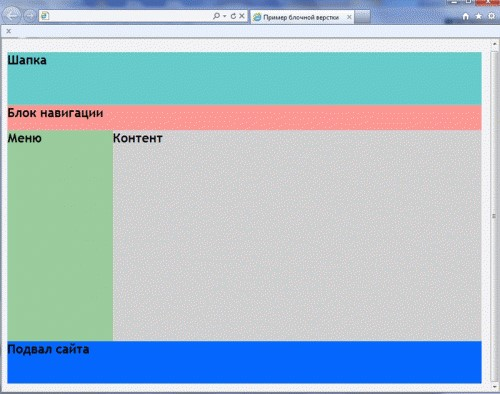

Лабораторная работа 1. HTML + CSS. Разработка статической страницы (меню и несколько страниц)
В данной лабораторной работе нам необходимо сверстать структуру HTML-документа. И в соответствии с шаблоном реализовать мини-сайт (не фиксированный: резиновый, адаптивный) с заданной тематикой, используя блочную верстку. Необходимо использовать данный шаблон:

Главная страница должна содержать: шапку, блок навигации, левое меню (на некоторых страницах оно не будет отображаться), контент, подвал сайта.
При выборе пункта меню (О нас, Контактная информация) в блоке навигации в области контента отображается соответствующая информация. При выборе меню (Каталог / Перечень / Список) в блоке контента отображается перечень соответствующих ссылок (а также появляется меню слева), при выборе любого пункта меню в блоке контента отображается информация о выбранном элементе.
В помошь htmlbook.